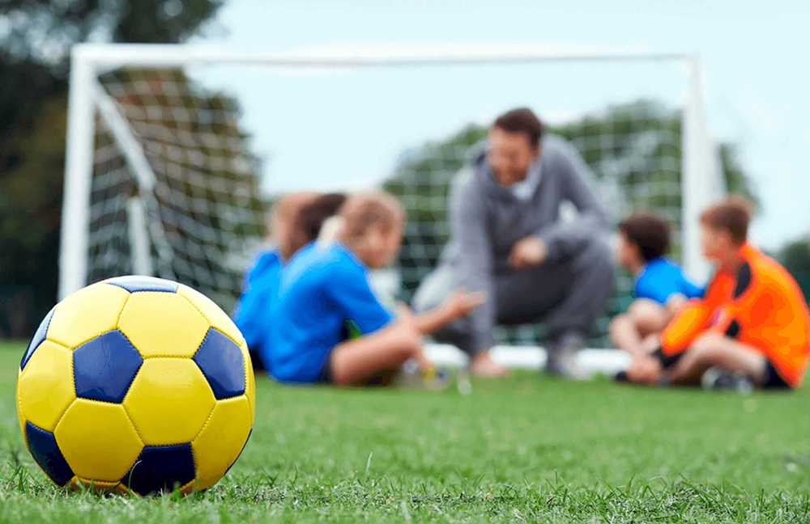

Um site de notícias da escola Albatroz.

Um site de notícias da escola Albatroz.
Data da Publicação: 10/05/2024 20:31:00
Autores:Erick, Gustavo, Gabriel, Igor e Kaik
Chutar a bola no gol não é a única vantagem do futebol! Uma pesquisa recente revela que esse esporte querido por muitos pode ter um impacto positivo e direto no aprendizado dos alunos.
Trabalho em equipe, disciplina e resiliência: características essenciais para o sucesso nos estudos e na vida, que são naturalmente desenvolvidas durante as partidas. O futebol ensina os jovens a trabalharem juntos para um objetivo comum, respeitando as diferenças e se esforçando para alcançar a vitória.
Mais foco e notas melhores: a atividade física regular, como a do futebol, também contribui para a melhora da concentração e do desempenho cognitivo. Isso significa que os alunos que praticam o esporte tendem a ter mais facilidade em se concentrar nas aulas, absorver o conteúdo e ter um bom desempenho nas provas.
Futebol: um aliado para o sucesso:além dos benefícios físicos e sociais, o futebol também pode ser um grande aliado na vida escolar. Portanto, incentive a prática desse esporte, seja jogando com os amigos, participando de um time ou assistindo aos jogos.
Lembre-se: o importante é se divertir e aproveitar os benefícios que o futebol oferece para o corpo e para a mente!